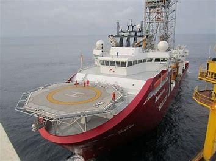
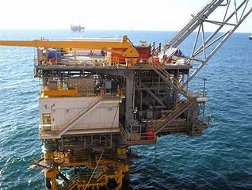

Noltremen Engineering Services Ltd was incorporated on 23rd August 2008 as Noltremen Enterprise but changed its incorporation status to Noltremen Engineering Services Ltd on 7th August 2019. Noltremen Engineering Services Ltd is an indigenous firm involved in Engineering, Procurement, Construction and general contractual services in the Nigerian O&G industry. Our Business Process provides products and services that meet customers expectations with high sense of quality, reliability & efficiency. Equipped with the right technology and experienced personnel, we provides services in civil construction & offshore structural engineering, slickline & wireline engineering services, NDT, well intervention services & safety valve maintenance, wellhead services & maintenance, project management services, and engineering, procurement & construction (EPC). We also carry out manpower training for skills development in the O&G industry. Noltremen Engineering Services Ltd provides excellent supply services in the O&G industry in Nigeria, such supplies ranges from valves, pipes, drilling bits, pipes & collars, drilling fluid, rotating equipment electrical, mechanical & civil materials, safety tools. Our most important tools are our experienced personnel in the various who are driven by the need to satisfy customers expectations and display their professional prowess in their specific areas of specialization. Our Civil, Mechanical & Electrical Constructions and Installations services are second to none in the industry. With world-class equipment and technology, we pride ourselves in providing excellent slick-line and wire-line services, coil-tubing, electrical & mechanical instrumentation & control engineering services.
1st Floor Freight House, Km 1 PH/Eleeme Road, PHC. info@noltremen.com; noltremen@noltremen.com www.noltremen.com
We strive to be the preferred company that provides excellent, satisfying and quality services in the Nigerian O&G industry with specific interest in Engineering, Procurement & Construction, and training and provision of manpower in various spheres as required in the industry utilizing latest equipment & technology
A one-stop company that provides products and services with the expectation of meeting the rising demand of the O&G industry, utilizing latest tools and technology with involvement of local and indigenous resources
Noltremen Engineering Services Ltd is ISO certified with capability of high processes and quality management system that that is in tandem with ISO 9001:2008, ISO 14001 integrated systems